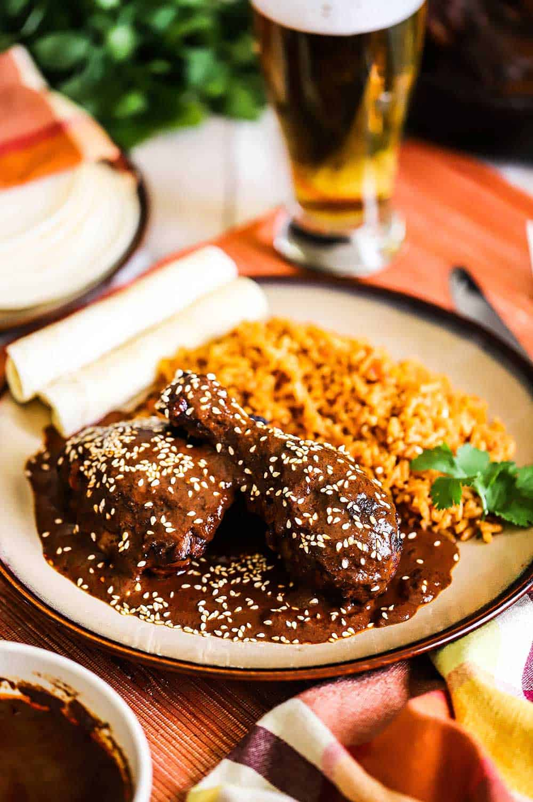

Mole

Mole (moe-lay) is a traditional mexican dish made out of different chiles, nuts, spices and chocolate. It is known for it's rich, earthy and nutty flavors. In Mexico, mole is reserved for big special events such as weddings, quinceaneras, baptisms or even a birthday will do! Regardless of the event or day, mole will always be a staple of mexican cuisine. Though I am biased in my love for mole (my favorite dish) this dish is a definite must try.
Ingredients
- Chiles (chipotle, guajillo, and ancho)
- Chicken broth
- Tomatillos and Tomatoes
- Lard
- Peanuts
- Raisins
- Spices (cinnamon sticks, cumin seeds, dried thyme)
- Chocolate (Abuelita or Ibarra)
Steps to make the Mole sauce
- Toast the chiles then put them in a blender.
- Simmer broth and add to blender.
- Allow ingredients to soak in broth, then blend.
- Cook the tomatillos and tomatoes, then transfer them into the blender.
- Cook the onion, garlic, peanuts, raisins, and spices in the lard, then transfer to the blender.
- Blend until smooth and pour the mixture into a saucepan.
- Stir in the remaining broth, chocolate, sugar, and salt. Simmer until thickened
- Remember to stir continuously so as to not have the sauce stick.